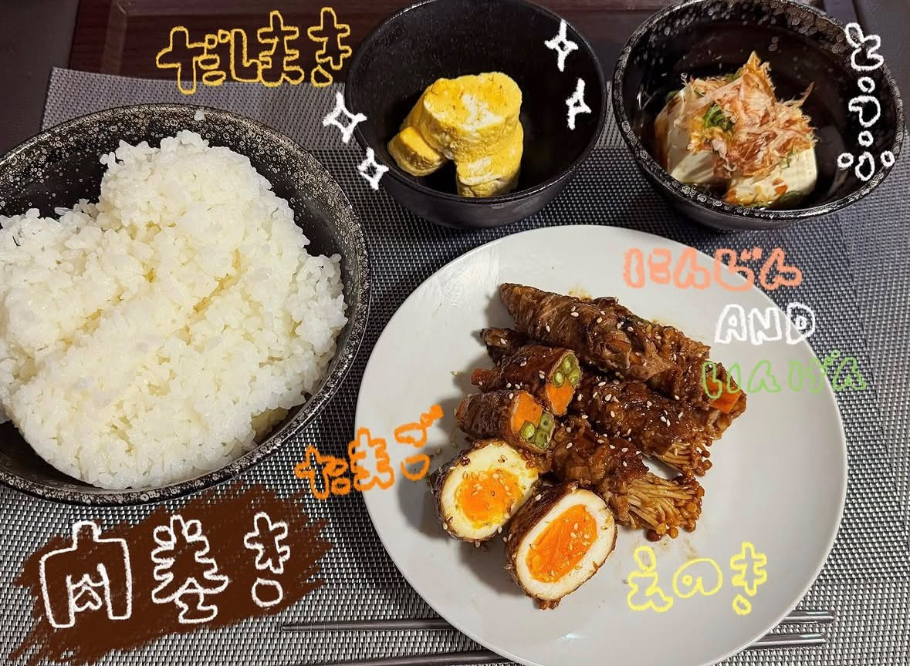
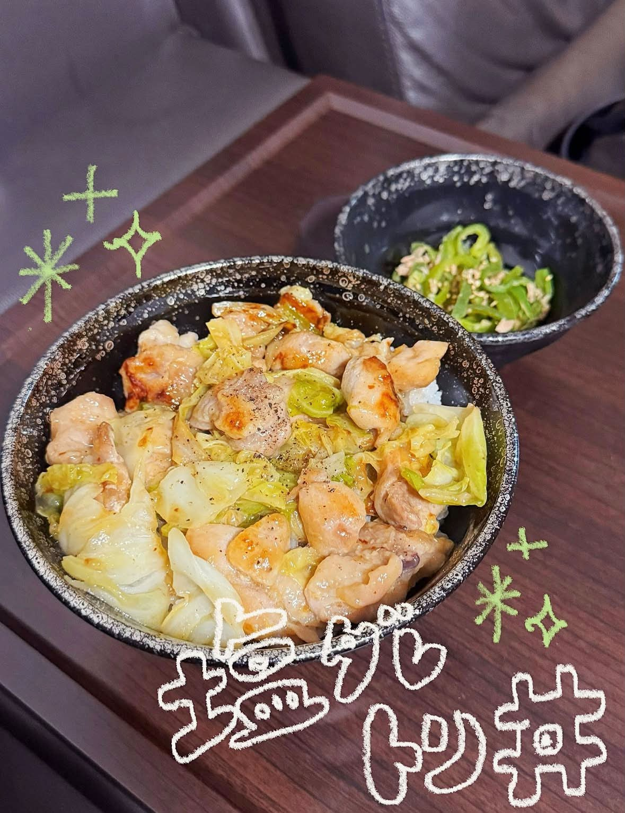
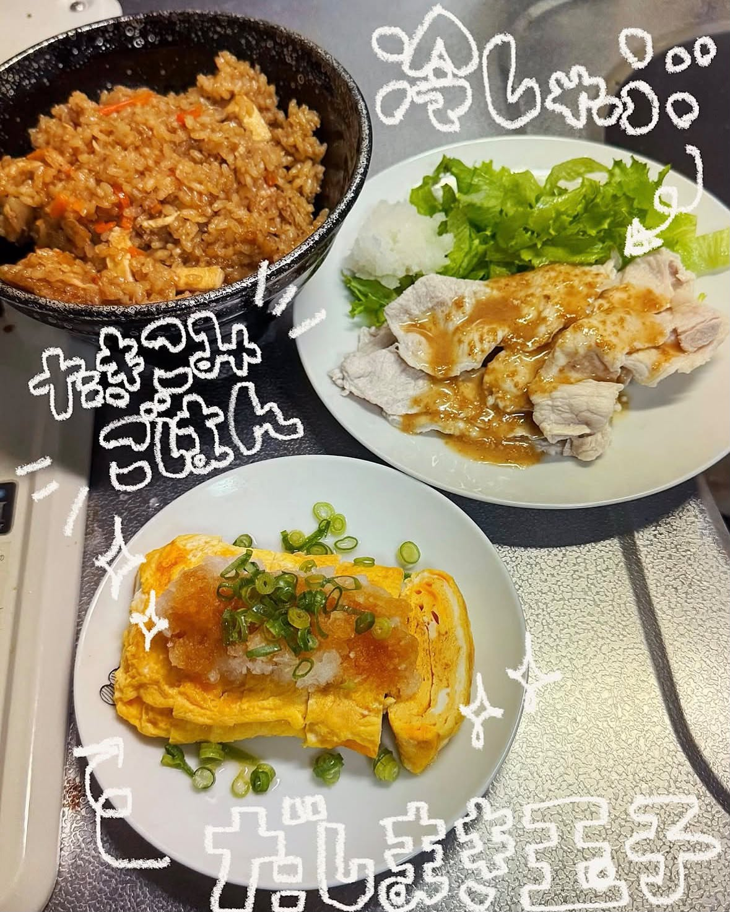

- トップ >
- 失敗ごはんストーリー
シチュエーション別ご飯
記念日や疲れているときなどのシチュエーションに合わせた手料理をご紹介。
焦がしてしまった料理

焦がさないためには、火加減をこまめに調整し、タイマーを活用して加熱時間を管理することが大切です。また、調理中はその場を離れず、料理の様子を定期的に確認するようにしましょう。
味付けに失敗した料理
味付けの失敗を防ぐためには、調味料は少しずつ加え、その都度味見をすることが大切です。また、レシピの分量を確認しながら調理し、必要に応じて最後に味を調整しましょう。
盛り付け失敗集

盛り付けの失敗を防ぐためには、料理を器の中央にバランスよく盛り付け、彩りや高さを意識することが大切です。また、盛り付ける前に完成イメージを考え、ソースや付け合わせは少量ずつ整えながら配置しましょう。
分量ミスで大惨事

分量ミスを防ぐためには、レシピを最後まで確認し、計量スプーンや計量カップを使って正確に量ることが大切です。また、調味料や材料は一度に入れず、少しずつ加えながら様子を確認しましょう。